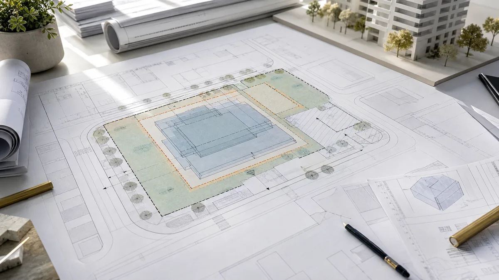

כשמדברים על התחדשות עירונית, רוב השיחה הולכת לזכויות בנייה: כמה קומות, כמה יחידות, כמה מטרים אפשר לקבל.
אבל יש בדיקה אחת הרבה יותר בסיסית שלפעמים מקבלת פחות מדי תשומת לב: תכסית המגרש.
אפשר לקבל הרבה זכויות בנייה על הנייר — ועדיין לגלות שהתכנון קשה בגלל צורת המגרש.
תכסית היא כמה מהקרקע אפשר באמת לכסות בבנייה אחרי שמביאים בחשבון גבולות חלקה, נסיגות, צורת מגרש, קווי בניין ומגבלות פיזיות.
זה נשמע טכני. בפועל, זה יכול להשפיע על תכנון, חניה, גרעיני מדרגות, שטחי שירות, עלויות ביצוע — ובסוף גם על ההיתכנות הכלכלית.
מהי תכסית?
תכסית היא שטח הכיסוי של הבניין על הקרקע. אם מגרש הוא 1,000 מ״ר והמבנה מכסה 400 מ״ר בקומת הקרקע, התכסית היא 40%.
חשוב להבדיל בין תכסית לבין זכויות בנייה. זכויות בנייה מתייחסות לסך שטחי הרצפה שניתן לבנות בכל הקומות. תכסית מתייחסת לשטח שהבניין תופס על הקרקע.
למה תכסית חשובה בפינוי־בינוי?
בפרויקטי פינוי־בינוי, התכנון צריך “להכניס” הרבה מאוד דרישות לתוך מגרש או מתחם:
- בניינים חדשים.
- לובי וגרעיני מדרגות.
- ממ״דים ושטחי שירות.
- חניונים ורמפות כניסה.
- שטחים פתוחים, מעברים ותשתיות.
אם התכסית האפשרית קטנה מדי, התכנון הופך מאתגר יותר. לפעמים המשמעות היא פחות יעילות, יותר קומות, פתרונות חניה יקרים יותר או צורך בתכנון מחדש של כל המתחם.
איפה נוצרים חסמים?
חסמי תכסית מופיעים בעיקר במקרים כמו:
- מגרשים צרים וארוכים.
- חלקות עם צורה לא רגולרית.
- נסיגות משמעותיות מכל צד.
- דרישות חניה תת־קרקעית מורכבות.
- צורך לשמור על מרחקים ממבנים קיימים או רחובות.
- תכנון שמחייב קומת קרקע פעילה או שטחים ציבוריים.
במקרים כאלה, השאלה אינה רק “כמה זכויות יש”, אלא “האם אפשר לתכנן אותן בצורה יעילה”.
למה לבדוק את זה מוקדם?
כי בדיקת תכסית מוקדמת יכולה לחסוך עבודה מיותרת.
לפני שמשקיעים בבדיקת אדריכל מלאה, שמאות, פגישות עם בעלי דירות או הצעות תמורה, כדאי להבין אם צורת המגרש בכלל מאפשרת תכנון הגיוני.
בדיקה מוקדמת לא נותנת תשובה סופית, אבל היא מסמנת דגלים:
- האם המגרש מאפשר בינוי יעיל?
- האם הנסיגות פוגעות משמעותית בשטח הבנייה האפשרי?
- האם יש צורך במתחם רחב יותר כדי לייצר תכנון טוב?
- האם כדאי לבדוק חיבור לחלקות סמוכות?
איך זה מתחבר ל־GIS?
כשמסתכלים על חלקה על מפה, רואים דברים שאי אפשר להבין מטבלה בלבד: צורה, גבולות, שכנות, רצף חלקות, קרבה לכבישים ומגבלות סביבתיות.
כלי שמחשב תכסית לפי גוש וחלקה מאפשר לקבל תמונה ראשונית בלי לפתוח תוכנת GIS מקצועית. זה לא מחליף תכנון, אבל זה נותן כיוון.
כלים באתר להמשך בדיקה
אפשר להשתמש ב־BuildCalc כדי להזין גוש וחלקה, לראות את גבולות המגרש, להגדיר נסיגות ולקבל שטח תכסית ואחוז תכסית מחושב.